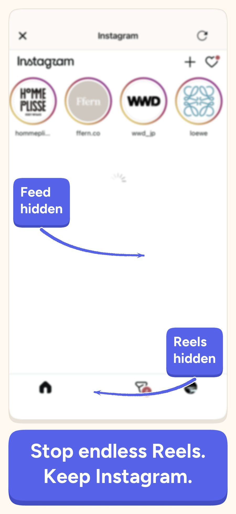
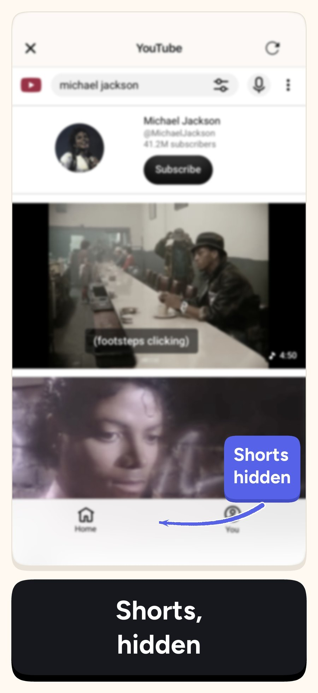
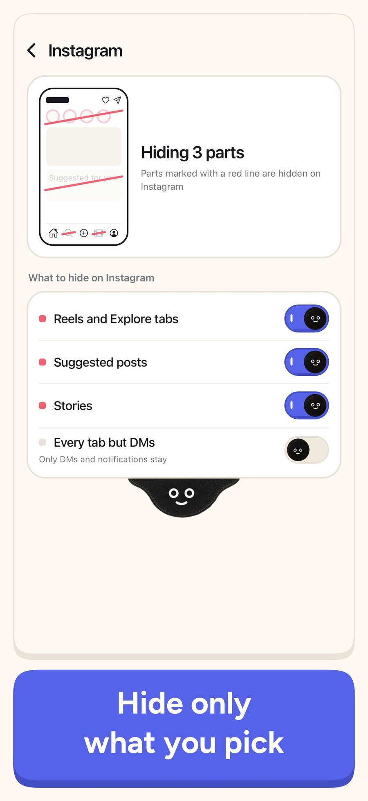
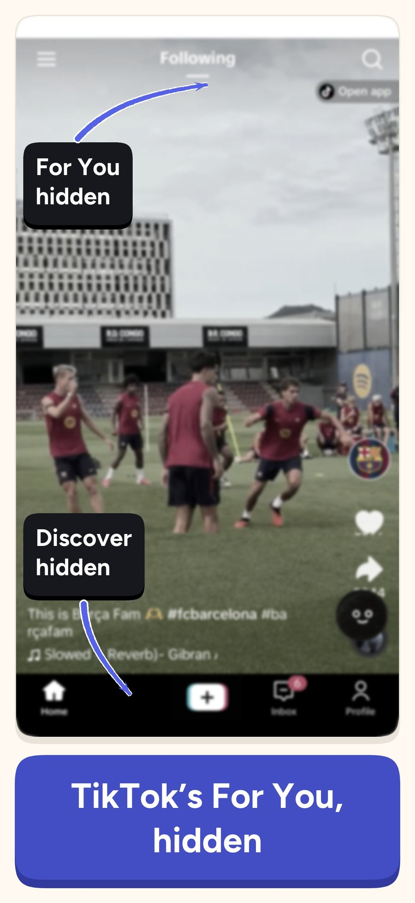
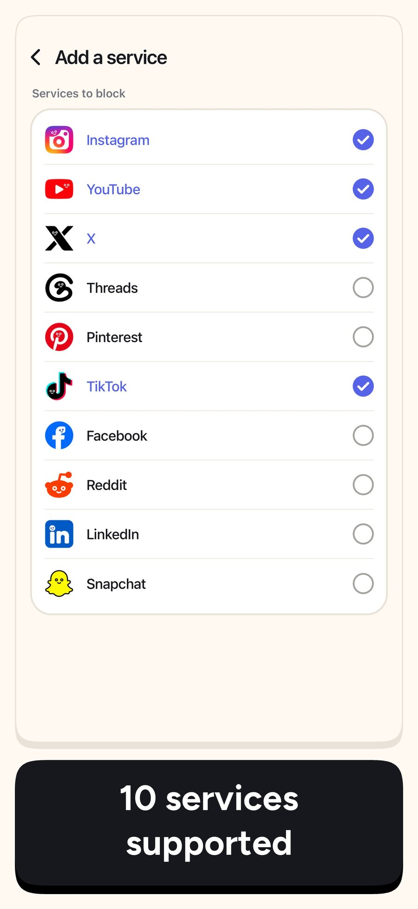
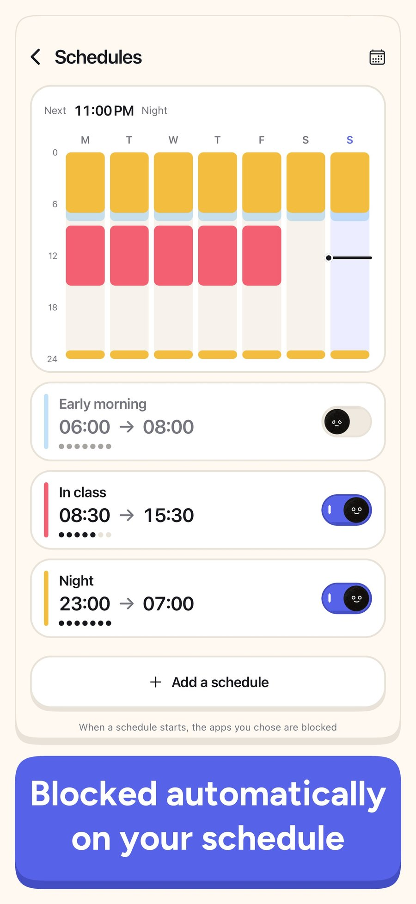
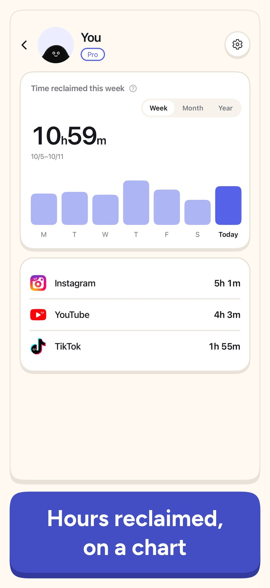
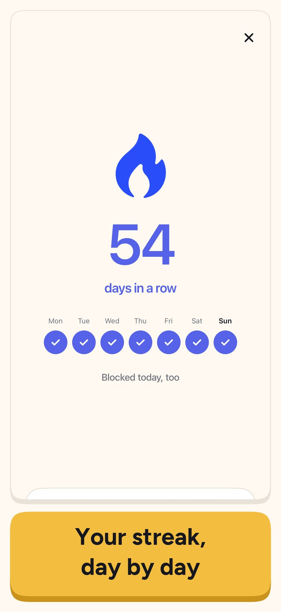
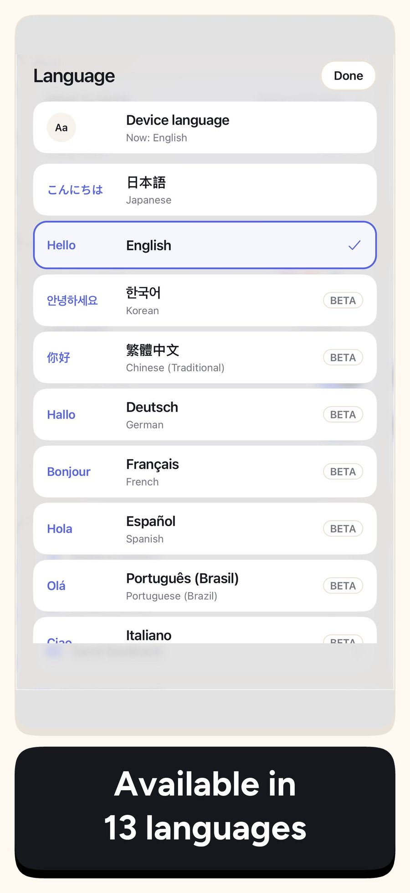

minulo 보도 자료
minulo는 인스타그램 릴스, 유튜브 쇼츠, 추천 게시물을 숨겨 주는 iPhone 앱입니다. DM과 친구 게시물은 그대로 쓸 수 있습니다. 대부분의 차단 앱은 앱 전체를 막기 때문에 메시지도 함께 막힙니다. minulo는 필요한 기능은 남기고, 계속 스크롤하게 만드는 피드만 숨깁니다.
업데이트: 2026년 11월 2일
보도
개요
- 앱 이름
- minulo (미눌로, 옛 이름 FeedMinus)
- 플랫폼
- iPhone (iOS), Mac (Safari와 Chrome에서 사용)
- 출시
- 2026년 9월
- 가격
- 다운로드는 무료입니다. 릴스, 쇼츠, 추천 게시물 숨기기는 무료로 쓸 수 있습니다. 선택형 Pro 구독이 있습니다 (가격은 App Store에서 현지 통화로 표시되며, 연간 플랜은 처음 구독하는 분이라면 7일 동안 무료로 써 볼 수 있습니다).
- 지원 SNS
- Instagram, YouTube, TikTok, X, Threads, Facebook, Reddit, Snapchat, Pinterest, LinkedIn
- 지원 언어
- 13개: 영어, 일본어, 한국어, 중국어(번체), 독일어, 프랑스어, 스페인어, 포르투갈어, 이탈리아어, 인도네시아어, 태국어, 베트남어, 러시아어
- 개인정보
- 로그인은 각 SNS의 공식 로그인 화면에서 합니다. minulo는 비밀번호나 DM 내용을 받지 않습니다. 공식 앱 차단에는 Apple의 스크린 타임 기능을 쓰며, 사용자가 어떤 앱을 골랐는지는 개발자도 알 수 없습니다.
- 개발자
- Ayumu Kitabayashi, 일본의 1인 개발자 (ReliefNote)
- 연락처
- workflowai.japan@gmail.com
- 링크
- App Store · 웹사이트 · 자주 묻는 질문 · minulo와 SocialLite 비교
작동 방식
minulo 안에서 인스타그램, 유튜브 같은 SNS를 열면 릴스, 쇼츠, 추천 영상, 추천 게시물이 처음부터 숨겨진 상태로 열립니다. DM, 친구 게시물, 검색, 게시는 그대로 됩니다. 스크린 타임 접근을 허용하면 고른 공식 앱도 막을 수 있습니다. 홈 화면에서 인스타그램을 누르면 릴스가 없는 minulo 쪽으로 들어가게 됩니다. DM으로 받은 릴스는 바로 재생되지 않고, 꼭 보고 싶을 때는 5분 동안 열 수 있습니다.
만든 이유
개발자는 DM 하나에 답하려고 인스타그램을 열었다가, 정신을 차려 보면 30분째 릴스를 보고 있곤 했습니다. 친구도 일도 SNS에 있어서 아예 끊을 수는 없었습니다. minulo는 개발자 자신이 쓰고 싶었던 앱입니다. SNS는 계속 쓰고, 끝없는 스크롤만 없앱니다.
스크린샷


스크린샷 1

스크린샷 2

스크린샷 3

스크린샷 4

스크린샷 5

스크린샷 6

스크린샷 7

스크린샷 8

스크린샷 9로고와 아이콘
앱 아이콘 (PNG) · 로고 (PNG) · 배너 1200×630 (PNG)


스크린샷은 App Store에 올린 영어판 화면입니다. minulo에 관한 기사에 이 이미지를 자유롭게 쓰셔도 됩니다. 스크린샷에 나오는 다른 서비스는 설명을 위한 것이며, 그 이름과 로고는 각 권리자의 것입니다.